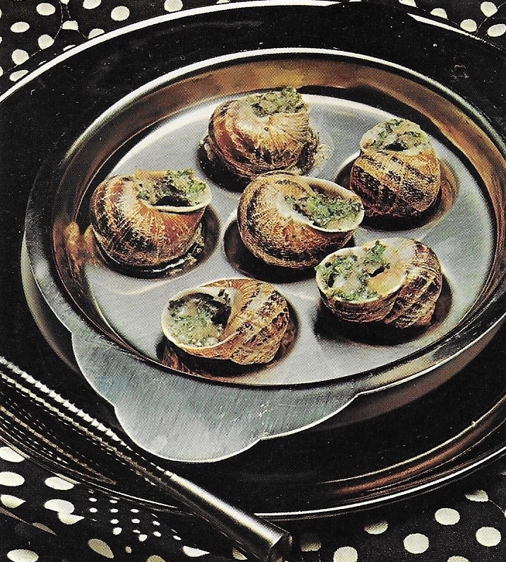

SNAILS IN GARLIC BUTTER

Indulge in the exquisite flavors of tender snails bathed in rich garlic
butter. This classic dish tantalizes the taste buds with its savory blend,
combining the delicate texture of snails with the aromatic essence of garlic.
INGREDIENTS
- 1 can snails, with shells (7 ½-oz can; 1 ½ dozen shells)
- ½ cup soft butter or margarine
- 2 or 3 cloves garlic, crushed
- 1 shallot finely chopped
- 1 ½ tablespoons finely chopped parsley
- 1 tablespoon lemon juice
- ¾ teaspoon salt
- ¾ teaspoon dried chervil leaves
- ⅛ teaspoon nutmeg
STEPS
- Several hours before serving: Wash snail shells, and drain well on
paper towels. Drain snails thoroughly; set aside
- In medium bowl, combine butter with remaining ingredients; mix well
- Place a generous 1/4 teaspoon of butter mixture in each shell. Push a
drained snail into each shell; cover with more butter mixture
- Arrange shells carefully, open ends up, in flat baking dish or special
escargot (snail) dishes. Cover and refrigerate
- To serve: Preheat oven to 400F. Bake snails in shells, uncovered 8 to
10 minutes, or until butter mixture is very bubbly. Serve immediately